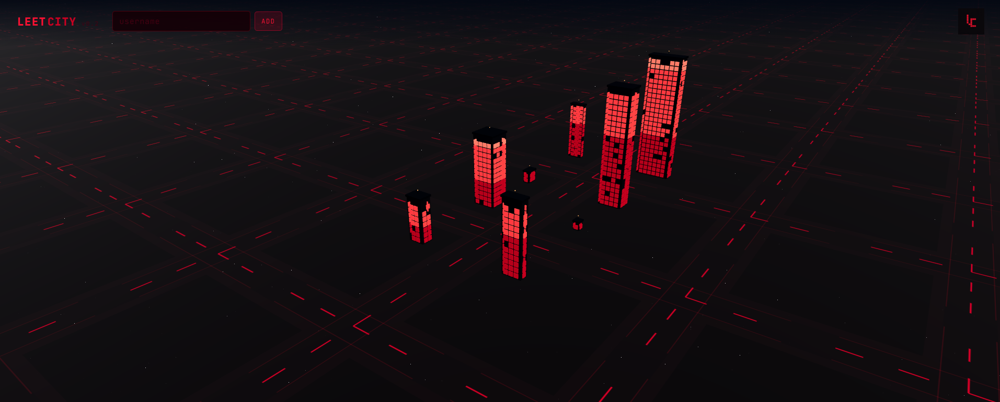
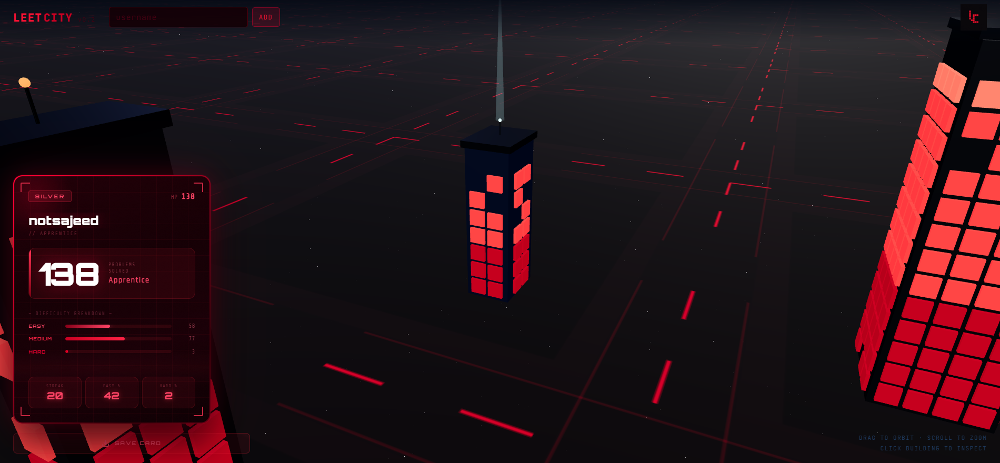

LeetCity
| Type | Visualization Platform |
| Status | Active Development |
| Framework | Next.js / React |
| Rendering | Three.js / R3F |
| Storage | Upstash Redis |
| Repository | GitHub |
| Deployment | leetcity.vercel.app |
Overview
LeetCity is a web application that visualizes LeetCode user statistics as buildings inside an interactive 3D city.
Instead of representing programming activity through traditional charts or profile dashboards, the project converts public LeetCode statistics into architectural structures distributed across a generated skyline.
Every user added to the environment becomes a physical structure within the city, allowing coding progress to be interpreted spatially rather than numerically.
Visualization System
The application transforms public LeetCode profile data into procedural buildings whose appearance changes according to coding activity.
Metrics such as solved problems, consistency, and difficulty distribution influence different architectural properties within the generated skyline.
Interaction Model
Users can navigate the environment through standard 3D scene controls, allowing the skyline to be explored from multiple perspectives.
- Drag to rotate around the city
- Scroll to zoom in and out
- Click buildings to inspect profile statistics
- Add multiple usernames dynamically
City Expansion
The skyline continuously expands as additional usernames are added.
Each profile occupies a distinct location within the environment, gradually transforming the scene into a dense procedural city composed entirely of developer activity.
The project explores the concept of representing collective programming progress as an evolving urban structure.
Implementation
The application is built using a component-driven web stack focused on interactive rendering and real-time scene updates.
- Next.js
- React
- TypeScript
- Three.js
- React Three Fiber
- Upstash Redis
Screenshots


Development Notes
The project originated from the idea of transforming abstract coding statistics into navigable physical spaces.
Current development focuses on improving procedural generation, interaction systems, and environmental scale.
Inspiration
LeetCity is loosely inspired by GitCity, which visualizes GitHub activity as cities.
The project adapts a similar concept for competitive programming by representing LeetCode activity as buildings within a generated skyline.